上一个帖子，俺八卦了一下真理部是如何歪曲抗日历史的。之后的短短几天，竟然有不少网友留言，让俺比较意外。更令人意外的是，留言的网友竟然还分为两派。
俺曾经以为：五毛多半是在墙内游荡的，翻墙对于五毛来说，即有技术难度，还增加了时间成本；而那些擅长翻墙的网友，素质应该较高（有良好的判断力），不易受党国洗脑。现在看来，事实令人不安。要么五毛进化了，开始到墙外为党国摇旗呐喊；要么是党国的愚民教育的影响扩大了，导致更多的网友被洗脑。
有鉴于此，俺今天再来一篇帖子。主题还是继续揭露真理部对历史的篡改，内容侧重于政治人物照片的PS。事先提醒一下，本文的图片较多，如果你正在用手机看帖，要小心流量哦。
其实在很多国家（包括一些民主国家），都有修改政治人物照片的先例。修改的目的，主要有如下两种：艺术加工和政治加工。
所谓的艺术加工，就是让照片看起来更有美感，衬托出政治伟人的"高大全"形象。艺术加工的手法很多，比如：消除脸部皱纹、增加脸部光泽、增加身高、黑白照变彩色照、等等。艺术加工，其实还可以接受，毕竟爱美之心人皆有之嘛。
但是政治加工就完全不同了。政治加工会对照片进行大改动（比如把某个人去掉，或者增加某个人）。改动之后的照片，往往面目全非，已经严重违背历史事实。
先从老毛时代说起。毕竟老毛影响了中国好几代人，和我们的关系比较密切。
严格来讲，开国大典是一幅油画，不是照片。爱抬杠的同学，就不要跟俺计较了 :)
请看开国大典第1版。站在老毛屁股后面的那一排人物，分别是：朱德、刘少奇、宋庆龄、李济深、张澜、高岗。为啥是这6人捏，因为当时的国家副主席就是他们6个（伟光正是非常讲究等级森严滴）。
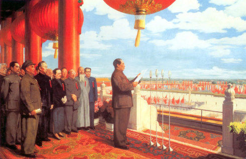
再看1955年修改过的第2版。这时，最右边的高岗已经摇身一变，变成一盆花了。这幅画给人的感觉是，当时就只有5个国家副主席。为啥高岗会变成一盘花呢？因为在刚解放的头几年，出了“高饶事件”这档子事儿。
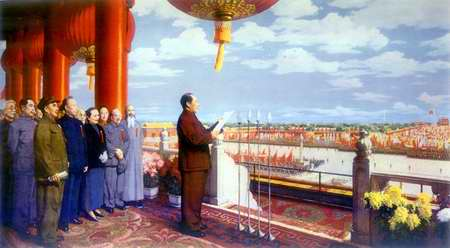
再看文革年间修改的第3版（图片有点模糊，请注意看）。这时，刘少奇也消失了，国家副主席又少了一人。原因很简单：这位老兄在文革初期，就已经被毛腊肉批倒批臭了。列位看官在中学历史课上，应该都听说过此事，俺就不再啰嗦了。
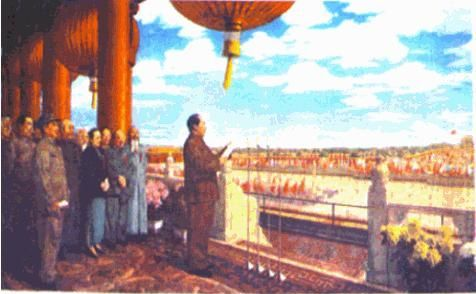
俺估计又会有一些五毛或者一些被重度洗脑的同学，跳出来质疑俺（就像上一个帖子那样）。所以，俺特地找来"中国共产党新闻网"的一篇文章（受党内斗争影响，数遭劫难的油画《开国大典》），这事儿可是伟光正自己承认的哦！
刘少奇不光在《开国大典》中消失，在很多其它的场合，也不见了踪影。请看如下照片。
这是老刘1959年当选为国家主席之后，老毛和老刘两人一起公开亮相。结果几年之后，照片上就只剩老毛了。
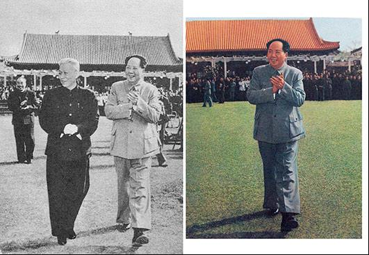
这是1964年老周访苏归来，老毛和老刘两人到机场迎接。篡改后的照片流传很广，俺小时候，好像邻居家的墙上就挂了一张。
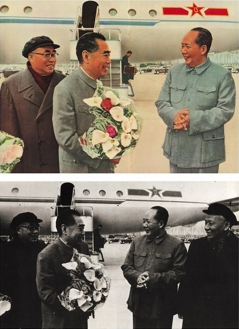
再来说说耿直的彭老总。自从在庐山会议挨批之后，他也从各种媒体上消失了。下面这张是1938年，延安机场合影。篡改后的照片，已经不见了彭老总。
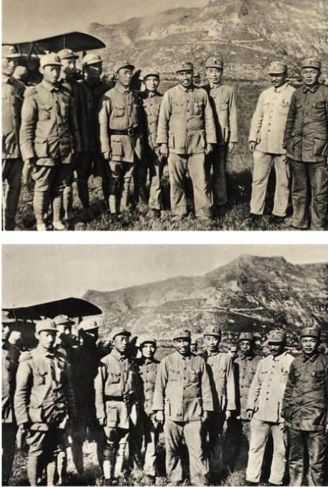
说完彭德怀，再来说说另一个姓彭的——彭真（其实他俩没啥亲戚关系）。彭真算是刘少奇的亲信，只不过名气好像没刘少奇那么大。但是在文革前，彭真官至北京市委书记兼市长。文革刚开始那会儿，还当上中央文革五人小组组长。也算是一位政坛红人。
下面这张照片，是老毛与彭真在十三陵水库工地参加义务劳动。彭真在文革中倒台后，照片上就没他了。
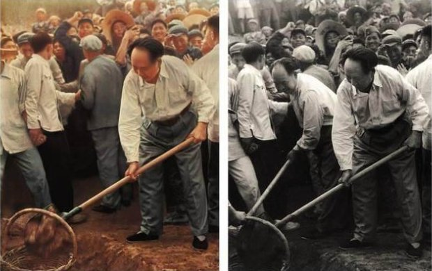
上述几张被篡改的照片，应该是四人帮指使的。四人帮虽然在文革后期非常活跃，但是倒台之后，个人形象同样被抹杀掉。就在老毛死后不到一个月，四人帮就被华国锋、叶剑英扳倒。四人帮一倒，官方刊发的毛主席追悼会照片，立马就做了修改，把四人帮抹掉了。
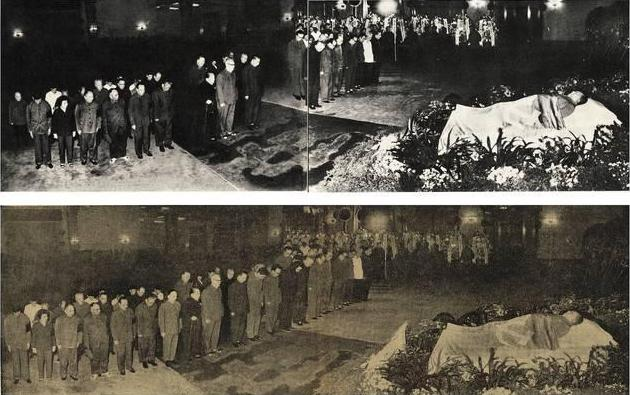
前面说的几个例子，都是政治人物。咱们再来看看文艺圈的PS。在文艺圈中，鲁迅是被真理部吹捧地最厉害的。老毛评价他所用的定语，是“三个家”（伟大的文学家、伟大的思想家、伟大的革命家）、“五个最”（最正确、最勇敢、最坚决、最忠实、最热忱）。既然鲁迅的形象如此光辉，真理部就需要对他的照片做一些政治加工，以迎合宣传的需要。
请看鲁迅与许广平及友人的合影。照片被隐掉的是林语堂。
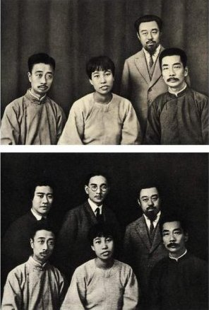
再请看宋庆龄、鲁迅等人欢迎萧伯纳的照片，被隐掉的又是林语堂（跟着一起倒霉的还有个老外）。
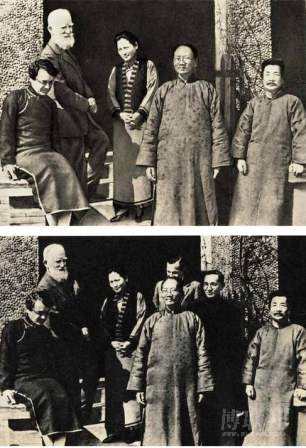
林语堂其人，可能不少网友会觉得陌生，但是电视剧《京华烟云》应该很多人不陌生。这就是他的名作改编的。
为啥真理部要跟林语堂过不去捏？因为林语堂经常和共党唱反调。真理部觉得他不适合跟“三家五最”的鲁迅站在一起照相。
刚才讲的都是咱中华帝国的 PS。为了避免网友们误解，以为PS政治人物是中华的独创，俺再举几个苏联的例子（尤其是斯大林统治时期的例子）。在斯大林统治那会儿，苏联被中国尊称为“社会主义阵营的老大哥”，咱们来看看这位老大哥PS的功力。
先来看一张经典的。说它经典，不是指这张照片本身，而是指它被篡改的过程。
这是1926的第一版，具体人物请看图片下的小字。
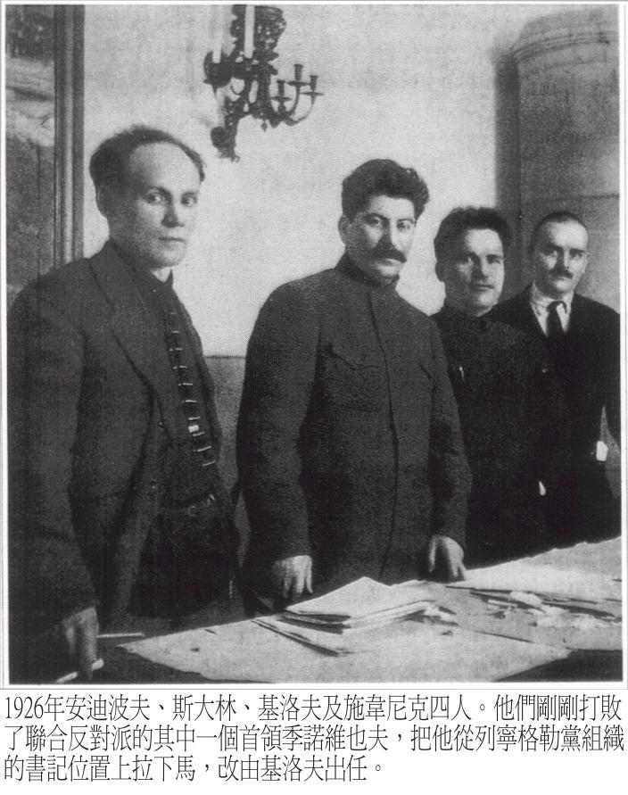
这是1940的第二版，少了一个亲密战友。
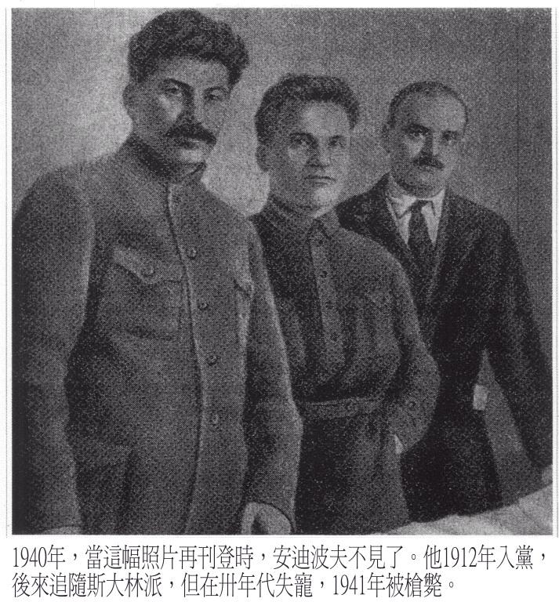
这是1949的第三版，又少了一个亲密战友。只剩下斯大林和基洛夫。大概因为基洛夫不是被清洗掉的阶级敌人，所以头像还留着。
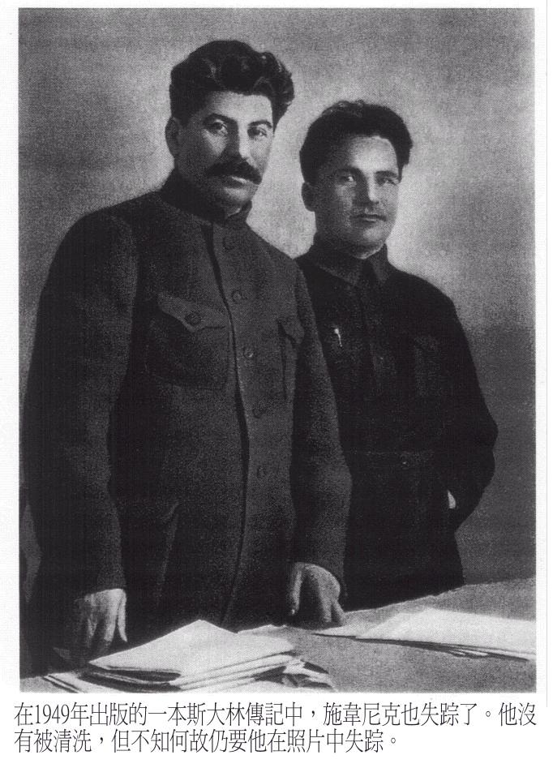
这是最后一版，终于就剩斯大林光棍一条了，不会再有下一版了。
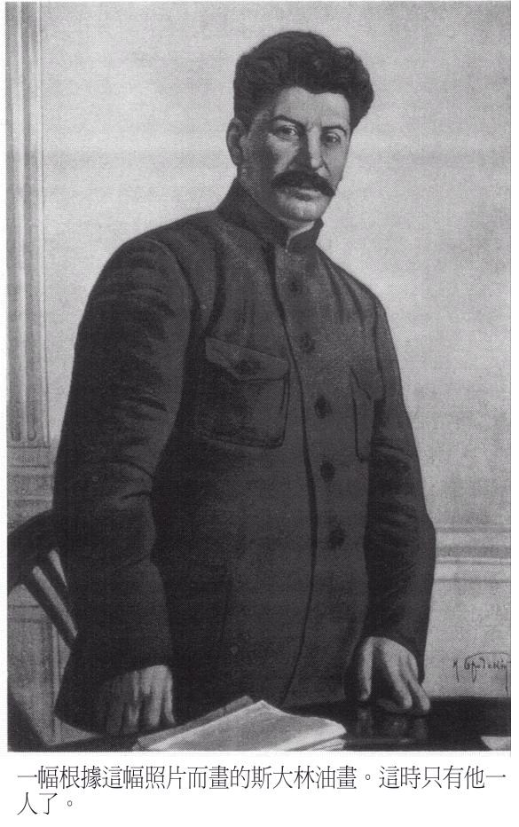
这是斯大林和一堆党代会代表（多为高级将领）合影。
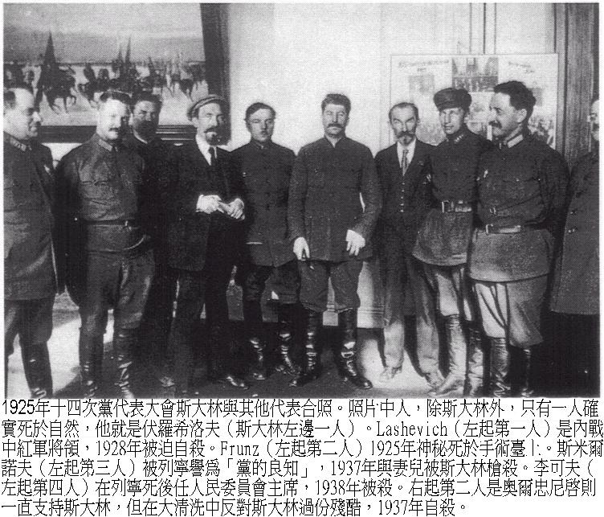
这是篡改后的照片。那些消失的将领，多半在1937年的苏联红军大清洗中，被干掉了。在那次大清洗中，5个元帅干掉了3个、15个方面军司令干掉了13个、9个海军上将干掉了8个、57个军长干掉了50个、186个师长干掉了154个、16位陆军政治委员全部干掉、28个军政治委员干掉了25个。
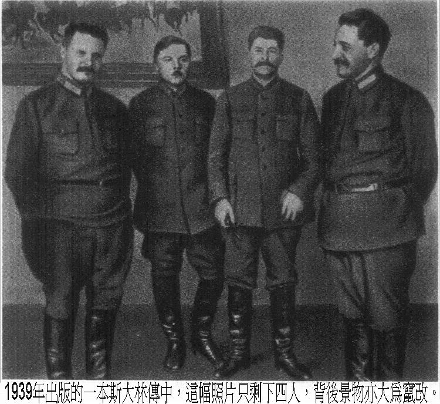
这是共产国际第二次代表大会合影，除了列宁和高尔基，还有很多布尔什维克的早期领导人（托洛茨基、季诺维也夫、加米涅夫、布哈林、拉狄克 ...）。
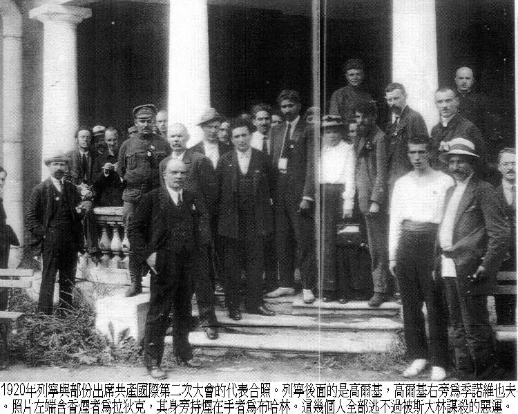
三十年代大清洗过后，这个照片就仅剩俩——列宁和高尔基。（就俩人拍照，还站成这样的位置，看这张照片的人难道不觉得奇怪吗？）
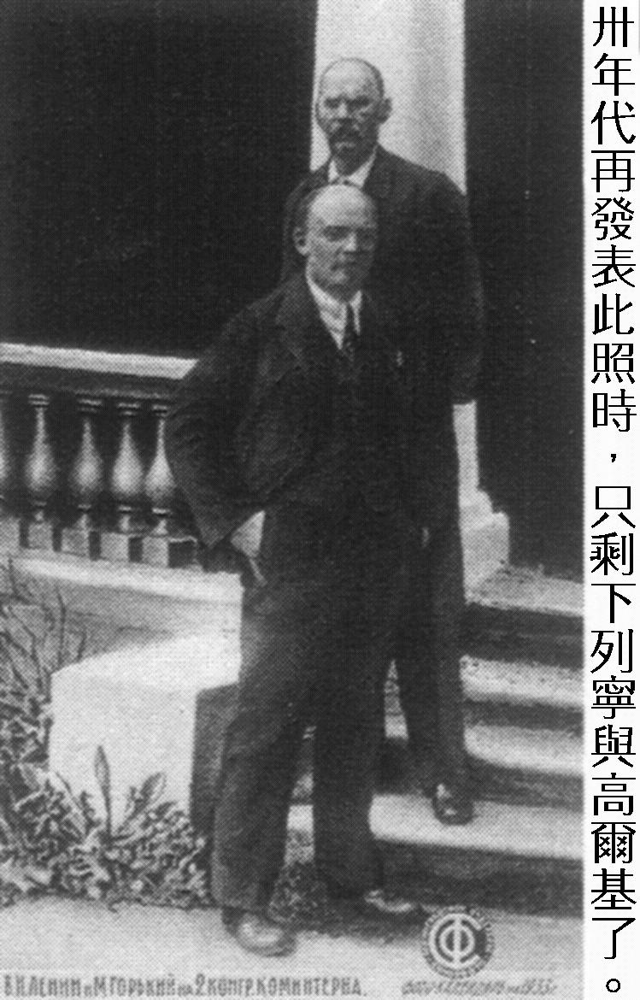
即便到了八十年代（斯大林、赫鲁晓夫、勃诺日涅夫皆已作古），此照片再次发表，依然还有很多人没有现身。
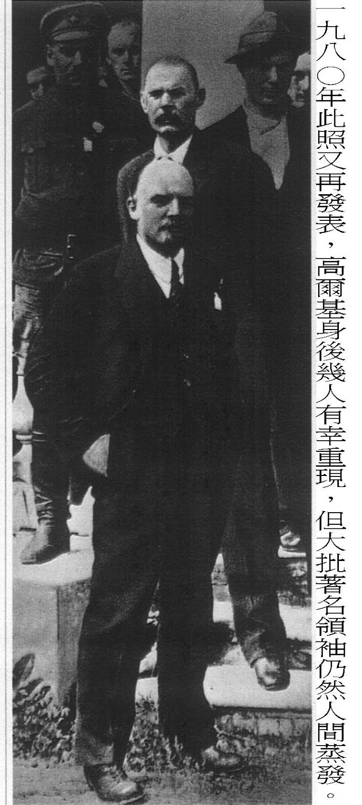
很多天真的网友以为，政治人物照片的 PS，只会在过去发生，现在应该不会再有了。那俺就再找一张中国当代的照片，以飨读者。
这是一张“邓小平”与“胡锦涛”握手的照片。就这么一张普通的照片，竟然也被篡改了2轮。而且真理部居然把【江太上皇】也给 PS 掉了 :)
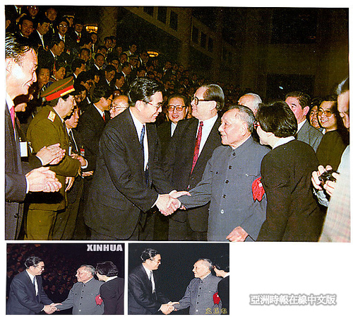
那中宣部为啥要篡改这张照片捏？把周围的人 PS 掉，是为了突出重点。让人感觉邓跟胡两人的亲密无间，进而强调胡是邓钦点的接班人。
看了这么多被篡改的照片，不知各位有何感想？有没有领略到真理部深厚的 PS 功力？
俺博客上，和本文相关的帖子（需翻墙）：
《关于抗日战争——谈谈真理部对抗战历史的篡改》
《谈谈真理部对朝鲜战争的忽悠》
《谁是最可恨的人？——写给仇日愤青们》
《每周转载：关于真理部的几篇旧文（网文5篇）》
俺曾经以为：五毛多半是在墙内游荡的，翻墙对于五毛来说，即有技术难度，还增加了时间成本；而那些擅长翻墙的网友，素质应该较高（有良好的判断力），不易受党国洗脑。现在看来，事实令人不安。要么五毛进化了，开始到墙外为党国摇旗呐喊；要么是党国的愚民教育的影响扩大了，导致更多的网友被洗脑。
有鉴于此，俺今天再来一篇帖子。主题还是继续揭露真理部对历史的篡改，内容侧重于政治人物照片的PS。事先提醒一下，本文的图片较多，如果你正在用手机看帖，要小心流量哦。
★为啥要 PS 政治人物的照片？
其实在很多国家（包括一些民主国家），都有修改政治人物照片的先例。修改的目的，主要有如下两种：艺术加工和政治加工。
所谓的艺术加工，就是让照片看起来更有美感，衬托出政治伟人的"高大全"形象。艺术加工的手法很多，比如：消除脸部皱纹、增加脸部光泽、增加身高、黑白照变彩色照、等等。艺术加工，其实还可以接受，毕竟爱美之心人皆有之嘛。
但是政治加工就完全不同了。政治加工会对照片进行大改动（比如把某个人去掉，或者增加某个人）。改动之后的照片，往往面目全非，已经严重违背历史事实。
★老毛时代的PS
先从老毛时代说起。毕竟老毛影响了中国好几代人，和我们的关系比较密切。
◇屡遭篡改的《开国大典》
严格来讲，开国大典是一幅油画，不是照片。爱抬杠的同学，就不要跟俺计较了 :)
请看开国大典第1版。站在老毛屁股后面的那一排人物，分别是：朱德、刘少奇、宋庆龄、李济深、张澜、高岗。为啥是这6人捏，因为当时的国家副主席就是他们6个（伟光正是非常讲究等级森严滴）。
再看1955年修改过的第2版。这时，最右边的高岗已经摇身一变，变成一盆花了。这幅画给人的感觉是，当时就只有5个国家副主席。为啥高岗会变成一盘花呢？因为在刚解放的头几年，出了“高饶事件”这档子事儿。
再看文革年间修改的第3版（图片有点模糊，请注意看）。这时，刘少奇也消失了，国家副主席又少了一人。原因很简单：这位老兄在文革初期，就已经被毛腊肉批倒批臭了。列位看官在中学历史课上，应该都听说过此事，俺就不再啰嗦了。
俺估计又会有一些五毛或者一些被重度洗脑的同学，跳出来质疑俺（就像上一个帖子那样）。所以，俺特地找来"中国共产党新闻网"的一篇文章（受党内斗争影响，数遭劫难的油画《开国大典》），这事儿可是伟光正自己承认的哦！
◇刘少奇人间蒸发
刘少奇不光在《开国大典》中消失，在很多其它的场合，也不见了踪影。请看如下照片。
这是老刘1959年当选为国家主席之后，老毛和老刘两人一起公开亮相。结果几年之后，照片上就只剩老毛了。
这是1964年老周访苏归来，老毛和老刘两人到机场迎接。篡改后的照片流传很广，俺小时候，好像邻居家的墙上就挂了一张。
◇彭德怀人间蒸发
再来说说耿直的彭老总。自从在庐山会议挨批之后，他也从各种媒体上消失了。下面这张是1938年，延安机场合影。篡改后的照片，已经不见了彭老总。
◇彭真人间蒸发
说完彭德怀，再来说说另一个姓彭的——彭真（其实他俩没啥亲戚关系）。彭真算是刘少奇的亲信，只不过名气好像没刘少奇那么大。但是在文革前，彭真官至北京市委书记兼市长。文革刚开始那会儿，还当上中央文革五人小组组长。也算是一位政坛红人。
下面这张照片，是老毛与彭真在十三陵水库工地参加义务劳动。彭真在文革中倒台后，照片上就没他了。
◇四人帮人间蒸发
上述几张被篡改的照片，应该是四人帮指使的。四人帮虽然在文革后期非常活跃，但是倒台之后，个人形象同样被抹杀掉。就在老毛死后不到一个月，四人帮就被华国锋、叶剑英扳倒。四人帮一倒，官方刊发的毛主席追悼会照片，立马就做了修改，把四人帮抹掉了。
★文艺圈的 PS
前面说的几个例子，都是政治人物。咱们再来看看文艺圈的PS。在文艺圈中，鲁迅是被真理部吹捧地最厉害的。老毛评价他所用的定语，是“三个家”（伟大的文学家、伟大的思想家、伟大的革命家）、“五个最”（最正确、最勇敢、最坚决、最忠实、最热忱）。既然鲁迅的形象如此光辉，真理部就需要对他的照片做一些政治加工，以迎合宣传的需要。
请看鲁迅与许广平及友人的合影。照片被隐掉的是林语堂。
再请看宋庆龄、鲁迅等人欢迎萧伯纳的照片，被隐掉的又是林语堂（跟着一起倒霉的还有个老外）。
林语堂其人，可能不少网友会觉得陌生，但是电视剧《京华烟云》应该很多人不陌生。这就是他的名作改编的。
为啥真理部要跟林语堂过不去捏？因为林语堂经常和共党唱反调。真理部觉得他不适合跟“三家五最”的鲁迅站在一起照相。
★苏联老大哥的 PS
刚才讲的都是咱中华帝国的 PS。为了避免网友们误解，以为PS政治人物是中华的独创，俺再举几个苏联的例子（尤其是斯大林统治时期的例子）。在斯大林统治那会儿，苏联被中国尊称为“社会主义阵营的老大哥”，咱们来看看这位老大哥PS的功力。
◇斯大林的亲密战友
先来看一张经典的。说它经典，不是指这张照片本身，而是指它被篡改的过程。
这是1926的第一版，具体人物请看图片下的小字。
这是1940的第二版，少了一个亲密战友。
这是1949的第三版，又少了一个亲密战友。只剩下斯大林和基洛夫。大概因为基洛夫不是被清洗掉的阶级敌人，所以头像还留着。
这是最后一版，终于就剩斯大林光棍一条了，不会再有下一版了。
◇斯大林的将军们
这是斯大林和一堆党代会代表（多为高级将领）合影。
这是篡改后的照片。那些消失的将领，多半在1937年的苏联红军大清洗中，被干掉了。在那次大清洗中，5个元帅干掉了3个、15个方面军司令干掉了13个、9个海军上将干掉了8个、57个军长干掉了50个、186个师长干掉了154个、16位陆军政治委员全部干掉、28个军政治委员干掉了25个。
◇列宁的亲密战友们
这是共产国际第二次代表大会合影，除了列宁和高尔基，还有很多布尔什维克的早期领导人（托洛茨基、季诺维也夫、加米涅夫、布哈林、拉狄克 ...）。
三十年代大清洗过后，这个照片就仅剩俩——列宁和高尔基。（就俩人拍照，还站成这样的位置，看这张照片的人难道不觉得奇怪吗？）
即便到了八十年代（斯大林、赫鲁晓夫、勃诺日涅夫皆已作古），此照片再次发表，依然还有很多人没有现身。
★当代的 PS
很多天真的网友以为，政治人物照片的 PS，只会在过去发生，现在应该不会再有了。那俺就再找一张中国当代的照片，以飨读者。
这是一张“邓小平”与“胡锦涛”握手的照片。就这么一张普通的照片，竟然也被篡改了2轮。而且真理部居然把【江太上皇】也给 PS 掉了 :)
那中宣部为啥要篡改这张照片捏？把周围的人 PS 掉，是为了突出重点。让人感觉邓跟胡两人的亲密无间，进而强调胡是邓钦点的接班人。
★结尾
看了这么多被篡改的照片，不知各位有何感想？有没有领略到真理部深厚的 PS 功力？
俺博客上，和本文相关的帖子（需翻墙）：
《关于抗日战争——谈谈真理部对抗战历史的篡改》
《谈谈真理部对朝鲜战争的忽悠》
《谁是最可恨的人？——写给仇日愤青们》
《每周转载：关于真理部的几篇旧文（网文5篇）》
版权声明
本博客所有的原创文章，作者皆保留版权。转载必须包含本声明，保持本文完整，并以超链接形式注明作者编程随想和本文原始地址：
https://program-think.blogspot.com/2010/09/censorship-of-images.html
本博客所有的原创文章，作者皆保留版权。转载必须包含本声明，保持本文完整，并以超链接形式注明作者编程随想和本文原始地址：
https://program-think.blogspot.com/2010/09/censorship-of-images.html